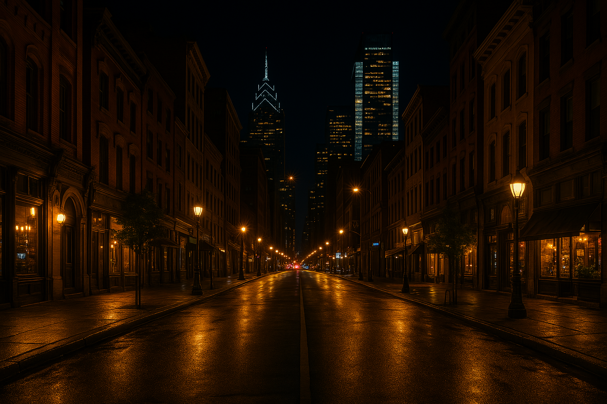
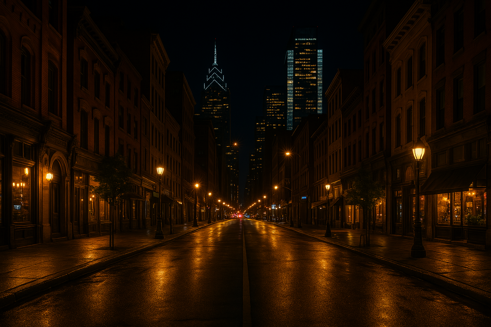

O site foi criado com o intuito de homenagear a cultura entre o campo e a cidade.
O campo e a cidade representam dois espaços distintos, mas interligados, que desempenham papéis
essenciais na sociedade. (...) coexistir em harmonia.
Quer conhecer mais sobre o nosso projeto?
Clique na imagem abaixo para ver uma mensagem especial.
üéâ Bem-vindo ao projeto Festejar!
Aqui quem fala é a aluna Mirela.
Vamos celebrar a conexão entre o Campo e a Cidade! üåªüèôÔ∏è
Clique na imagem novamente para fechar.
Galeria de Imagens
 

As imagens deste projeto trazem uma visão geral do campo e a cidade nos dias atuais, de um lado mostrando a tecnologia e os avanços da cidade e o charme e natureza ligadas ao campo.
Neste site eu Mirela vou apresentar idéias, projetos e com isso muitos motivos pelos quais A Conexão Campo e Cidade deve ser Festejada, venha comigo nessa aventura cheia de informação e novidades